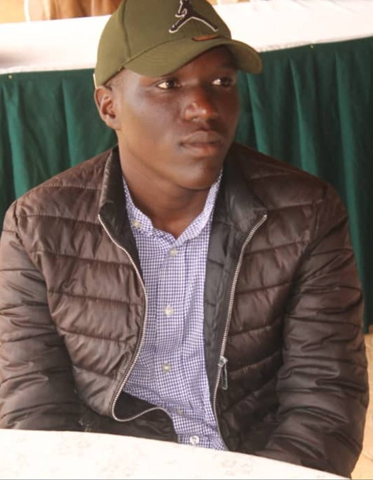
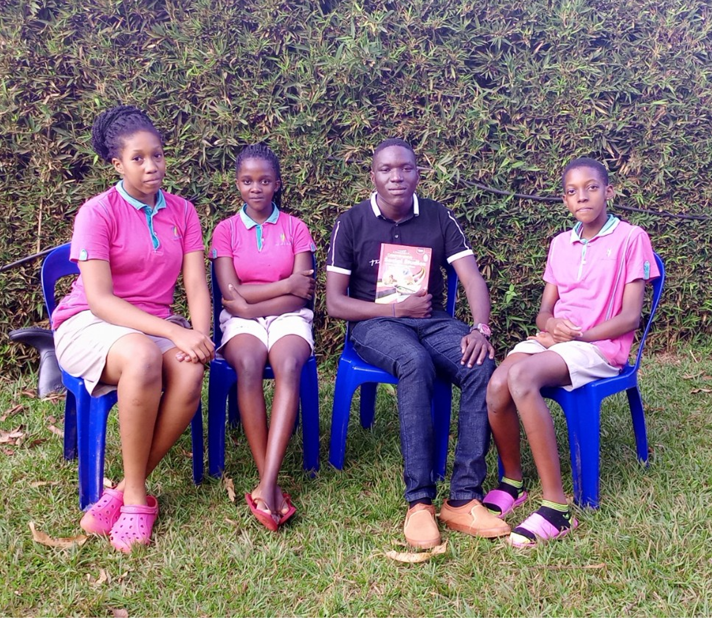

An enbodied teacher known for instilling knowledge in minds of the young.
Introduction
Hello and hi! My name is Biola Zahavah together with Mhapa Camilla and Julianna Keeya. The three of us form TIF which stands for Technology is Future.
We are students at MST Junior School, Uganda. For the past months or so, we have been learning web desing and with the knowledge aquired we came up with this website.
Assigned to us as a project by our teacher Mr. Tonny Bright, TIF were meant to choose a staff member in our school and write a simple break down of their life story.
In a school with not more than a hundred staff, you would think it's easy to get someone to interview.Not only was it difference in time schedule that was perturbing
but the fact that every individual had a unique and moraled story to tell.For example a seventy year old man with the strength of a youth for in the reign of Amin Dada
wealthy with supermakets across the town but a glimps was what it was for out of the blue he found himself here. Air in pockets with 10 mouths to feed and three wives to please.
Yah! I know intriguing but after a long hard think that may have involved alot of processing and a few screams in our pillows,we finally chose our candidate.
A man of character and history, Oledria James.

Who Is Oledria James?
- Originating from the Democratic Republic of Congo (DRC) and born in Arua,Uganda.Oledria James is a man
fond of studying
and learning new things.Like any 26 year old,he enjoys the thrills of football and the soothing sound of music.
He refers to himself as a man of character and nature.By his determination and hardwork,he is whom he is today.
His Early Enlightenment.
- As a child going to school was fun and something to look forward to for James.He attended a military school found in a barracks.
I guess you can picture that environment. Strictness was something casual,
it was like the little seasoning that just added flair to it all.
James was loved by all his teachers for his discipline and concentration.
Although he had one exercise book for all subjects,
he was focused and knew his goal making him score a whooping aggregate 10 in his final year of primary
which is a hard thing to archieve in a school of his kind.He made his way through secondary then joined
Primary Teachers College followed by Kyambogo University and archieving the profession of teaching.Now he looks back and remembers
that little boy who was and is determined to make it.
His Proficiency
- James didn't always like teaching but the thought of taking notes and the tingle he got from explaining history gave him a smile
of a child who sees candy.As a teacher of Social Studies with 8 years of experience,you have to know how to make a child enjoy
the subject and I can say,his love for history rubbed of on his students.Being a teacher in Uganda means you don't have access to
economic stability especially in the economy of today but for James,he is not only a teacher but also an entreprenuer buying and exporting fish from the Albertine region to DRC
and hardware shops in Arua,lets just say his quick Maths give him enough to sustain
his not so perfect lifestyle.
What's next
- Even though James has things going good he still has ambitions of archieving greater things in life like expanding his businesses,
changing more lives of children and hey who knows maybe being the president.What can i say,the mind of a 26 year old is still young!
His friend advised him to start having data classes online because in Generation Z (the 2000s) tech skills are something that adds to
your professional value.So as we close this chapter,It leaves us to wonder What's next in the life of this young man?
